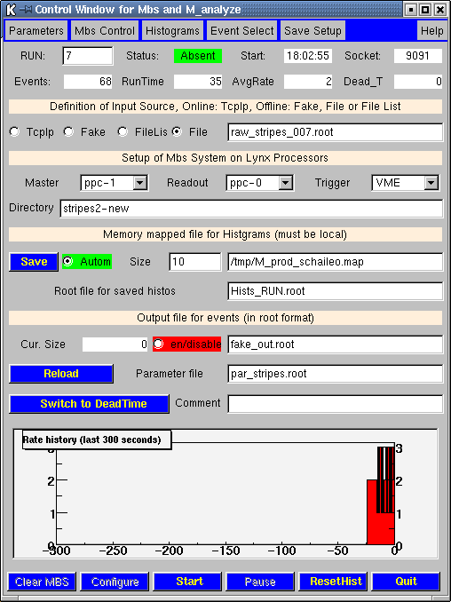

C_analyze, A Control Program for M_analyze
The program C_analyze serves to control the analysis process of the MBS and ROOT based DAQ suite MARABOU. Datasource, input file MBS Control Online Histograms Output File Parameter File Commands Miscellaneous Picture of a sample sessionPicture of a sample session
Datasource, input file
When running Online the data source is a MBS system on a PowerPC running Lynx connected by TcpIp. All events will be requested (Sync mode). Running Offline input may be from a ROOT file written in previous On- or Offline session. If no input files exist yet a fake mode may be used to produce a data file for testing of the M_analyze code. In this case in TUsrEvtReadout::Analyze() code may be added to fill fake data, e.g.: if (gMrbAnalyze->IsFakeMode()) { dd1.fData[0] = gRandom->Gaus(10,2); dd1.fData[kE111] = gRandom->Integer(2); } Furthermore a list of ROOT files may be given which format is described here .Filelist
As input an ASCII file with a list of files can be given (select Input source: Filelist). Its name must have the extension .list. This file has the following format: # input first number param histo output # file event of evs file file file #-------------------------------------------------------- run1.root 0 0 none + runs_1-6.root run2.root 0 0 - + + run3.root 0 0 - h_1-3.root + run5.root 0 0 - + + run6.root 0 0 - h_5-6.root + This list reads all events (0 means all) of each file. It puts histograms for run 1 - 3 on one file and runs 5,6 on a second one. All (selected) raw data are collected into runs_1-6.root. No parameter file is used. Note: Lines starting with # and empty lines are ignored. + means: keep writing on previous file, in case of the histograms this means the memory mapped file. - means keep previous definition.MBS Control
C_analyze controls MBS processes running on Lynx processors. Definition of the Lynx processors and trigger module type is done by the combo box type input dialogs. Other parameters and functions arr provided in the Mbs Control popup menu. C_analyze uses for this rsh commands to start MBS and TcpIp socket connections when MBS is running. C_analyze can be used to compile the users readout function on the Lynx processors. The MBS control files (e.g. node_list.txt) must reside on the users login directory on Lynx plus the path provided in the Mbs Directory input field. Logging output of MBS is written into file mbslog.l in this directory.Online Histograms
Histograms may be stored in a memory mapped file which must reside on a local filesystem (e.g. /tmp). The size of this file should be adjusted to keep all histograms and not wasting too much memory. Use of a memory mapped file can be avoided giving it the name none. This saves memory needed for the memory mapped file. It also saves CPU needed to update the histograms on the mapped file. Histograms are saved at the end of a run automatically. with the name given. (e.g. hists_RUN.root where RUN will be replaced by the actual run number.) If the mapped file exists at start of a new run filling of histograms may continue on this file. The current contents is saved in the same directory (e.g. /tmp) with the name extended by _save.root. If individual histograms should be cleared please consult section on ResetHists Histograms can still be displayed online by HistPresent running on the same or a different node. The command Hists from M_analyze should be used for this. Also histograms are saved at the end of run. Additionally a Save button is provided which can only be activated if a run is paused.Output File
M_analyze writes events in ROOT format as a ROOT trees. This file can be analyzed by M_analyze itself, by a root macro or a special program like HistPresent. Data written to a file is buffered in memory for reasons of efficiency. However it is automatically saved when a presetable amount of data is collected. This value is controllled by TUsrEvtReadout.AutoSave in the .rootrc file the default is 10000000 bytes (i.e. 10 Mbytes). This value should be adjusted to the event size and data rate and the risc of a crash.Parameter File
The name of a parameter file typically containing windows and calibration functions used in the analysis may be passed to M_analyze.Commands
Clear MBS executes via rsh the command /mbs/MbsVersion/script/mbsshutall.sc. Configure startsup on Lynx all the required processes (Prompter, Transport etc.). Start starts the M_analyze process on Linux and issues a start acquisition on the Lynx side. Pause stops acception of events on the Linux side. In synchronous mode (the normal one) data taking on the Lynx side will also stop when all buffers are filled. It does n o t yet issue an stop acquisition on the Lynx side as it should be. This will be implemented eventually. This that after resume events may still in the buffers. If this is undisirable triggers should be inhibited by hardware before the Pause. Stop stops the current run, M_analyze closes output files and exits. On the Lynx side collector and tranport are restarted and the system is put in state Configured. Quit ends the C_analyze session ResetHist is explained hereReset histograms
ResetHist resets all or selected histograms. The selection mask is defined in the Histogram popup menu. If the user wants to reset individual histograms (while continue filling others) it has to this in the Analysis program. It c a n n o t be done at the place where histograms are booked since restoring of the existing histograms must happen later. Another way is a piece of code at start of the xxx::Analyze() at start of new run. Note that a variable controlling this must be static. e.g. static Int_t first_time = 0; if(first_time == 0){ first_time = 1; hxx->Reset(); ....Miscellaneous
Several checks are done at startup and during running. Parameters like limits on required disk space (i.e. quota and space left on output device) are adjustable from the Parameter popup menu. M_analyze fills a rate history of the last 300 seconds. On the display the 0 label corresponds to now. Optionally a deadtime histogram may be shown. For this to work a scaler (hardware) must be provided and set up in the Config.C file which describes the experiment. For more details see Marabous home page. C_analyze communicates with M_analyze by sending messages. M_analyze writes its PID and status into a file /var/tmp/M_analyze.PORT where PORT is the socket number used for communication. M_analyze can be run in a debugger (gdb). This is controlled in the Parameter popup menu. Selecting value 1 justs runs M_analyze within gdb, 2 puts a breakpoint at main() i.e. start of program to allow more breakpoints to be set. C_analyze remembers its parameters in an ASCII file C_analyze.def (backed up to C_analyze.def.bck).